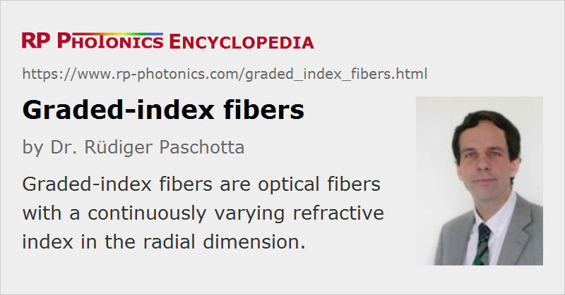

Graded-index Fibers
Definition: optical fibers with a continuously varying refractive index in the radial dimension
Alternative term: gradient index fibers
More general term: optical fibers
German: Gradientenindexfasern, Gradientenfasern
Categories: fiber optics and waveguides, lightwave communications
How to cite the article; suggest additional literature
Author: Dr. Rüdiger Paschotta
Many multimode fibers are so-called step-index fibers, where the refractive index is a function of the radial position, i.e., it is constant in some regions and exhibits steps (sharp changes) at certain locations. However, there are also so-called graded-index fibers (or gradient index fibers), where the refractive index varies smoothly in the radial direction. That can be achieved with fiber fabrication techniques where the chemical composition of the glass preform varies continuously.
A typical design of a graded-index fiber contains a parabolic profile from the fiber axis out to a certain radial position; outside that area, there can either be a constant refractive index (the cladding index) or first a depressed index region (trench). Figure 1 shows a simple design without such an index trench.
Precisely speaking, what is meant to be parabolic is the square of the refractive index, i.e., the dielectric constant, rather than the refractive index itself. This detail, however, is quantitatively not that important in most cases, since the refractive index contrast is typically quite small.
A remarkable feature of such parabolic index designs is that the effective refractive indices of the guided modes are equally spaced (only not precisely for the highest-order modes, “seeing” the outer region which deviates from the parabolic shape). Figure 2 shows the effective indices versus mode area; one can see that the effective index essentially depends on the mode index l only, but hardly on m. (Note that many horizontal lines in Figure 1 nearly coincide for that reason.)
As shown in Figure 3, the group indices are approximately the same for all modes – except for the highest-order modes. This shows that the intermodal dispersion, which can be characterized by the differential mode delay, is quite small – much smaller than for a step-index fiber.
Of course, one can further tailor the refractive index profile, slightly deviating from a parabolic shape, in order to further optimize mode properties. In particular, one may generalize the parabolic profile by using a different exponent; the higher that exponent, the closer the profile would be to a step-index profile. An optimized profile exponent, deviating slightly from 2 (the value for parabolic profile), can be determined for fibers with high index contrast; the optimum value depends on the so-called profile dispersion parameter, describing the relation between group index and refractive index for the chosen material composition. For example, the results of Figure 3, obtained for a parabolic profile, can be significantly enhanced further with a modified profile exponent of ≈1.85.
In an intuitive picture, one may consider hypothetical rays propagating along the fiber. Such rays would perform sinusoidal oscillations around the fiber axis; the index gradient always “bends” them back towards the axis. The strongly reduced intermodal dispersion is sometimes “explained” with the higher velocity of light away from the fiber core, which compensates the longer geometrical path length of the strongly oscillating ray, thus effectively leading to an effective path length per meter fiber which is the same for all rays. This picture is rather crude, however; for example, it suggests that phase delays acquired by the rays are strongly related to time delays, which is actually not true. In fact, the strongly mode-dependent effective indices (see Figure 2) show that the phase delays acquired by different modes are quite different, while the time delays are indeed quite similar according to Figure 3.
Figure 4 shows a simulation (with numerical beam propagation) where a Gaussian input beam has been somewhat displaced against the center of the fiber core. In the fiber, the intensity profile oscillates without fully reaching the edges of the core region. The observed oscillation is somewhat similar as in the ray picture mentioned above, but the perfect periodicity is destroyed by the cut-off parabolic shape. Also note that the transverse size of the oscillating intensity peak varies substantially along the fiber.
For comparison, Figure 5 shows the same for a step-index design with the same core radius and maximum refractive index. The result looks quite different; one obtains a complicated evolution of the intensity profile.
Applications and Materials for Graded-index Fibers
The above example has been for a germanosilicate fiber, i.e., a glass fiber. Similar designs, with typical core diameters being 50 μm and 62.5 μm, are used for multimode telecom fibers in fiber-optic links with a transmission distance of a few hundred meters, for example. The fiber designs and high-precision fabrication techniques have been refined more and more for obtaining a minimum differential mode delay, in that way maximizing the modal bandwidth and thus the transmission capacity of such links. Early standards for named OM1 and OM2; the optimization later lead to OM3 and OM4 fibers, allowing for substantially higher performance.
Typically, a small differential group delay and thus a high modal bandwidth is achieved only in a relatively limited wavelength region e.g. around 850 nm; the performance is already seriously degraded for a wavelength deviation of only 30 nm, for example. However, special wideband multimode fibers have been developed which offer relatively low intermodal dispersion over a broader wavelength range (e.g. 100 μm).
In the future, further substantially increases of transmission capacity may be achieved with mode division multiplexing, which can be realized with so-called multiple input multiple output (MIMO) techniques. For certain practical reasons, it is then still important to achieve a rather small differential group delay.
Graded-index designs are also sometimes used with other types of glass fibers, e.g. for mid-infrared fibers [8].
There are also plastic optical fibers (POF) having graded index profiles. They are often used in the same way, i.e., with the goal of minimizing intermodal dispersion effects in fiber-optic links.
Graded-index fibers are not only used for telecom purposes, but also e.g. for laser power transmission (power over fiber), where one may profit from the better output beam profile. For such applications, fibers with much larger core diameters of e.g. 100, 200, 400 or even 600 μm are available. Another application is using short pieces of such fibers as mode field adapters [12]. Some graded-index fibers are used in fiber-optic sensors, some are developed as large mode area fibers [9], and there are even versions for guiding terahertz radiation [16].
Graded-index Single-mode Fibers
Usually, the term graded-index fibers is used for multimode fibers only. However, single-mode fibers also often have a graded (but normally non-parabolic) refractive index profile. This may sometimes just result from certain fabrication conditions, while in other cases it is actively tailored for obtaining certain mode properties – mostly concerning chromatic dispersion. For example, triangular, trapezoidal or Gaussian profiles, possibly equipped with additional features, are used for dispersion-shifted fibers.
Questions and Comments from Users
Here you can submit questions and comments. As far as they get accepted by the author, they will appear above this paragraph together with the author’s answer. The author will decide on acceptance based on certain criteria. Essentially, the issue must be of sufficiently broad interest.
Please do not enter personal data here; we would otherwise delete it soon. (See also our privacy declaration.) If you wish to receive personal feedback or consultancy from the author, please contact him e.g. via e-mail.
By submitting the information, you give your consent to the potential publication of your inputs on our website according to our rules. (If you later retract your consent, we will delete those inputs.) As your inputs are first reviewed by the author, they may be published with some delay.
Bibliography
| [1] | R. Olshansky, “Mode coupling effects in graded-index optical fibers”, Appl. Opt. 14 (4), 935 (1975), doi:10.1364/AO.14.000935 |
| [2] | L. Jacomme, “Modal dispersion in multimode graded-index fibers”, Appl. Opt. 14 (11), 2578 (1975), doi:10.1364/AO.14.002578 |
| [3] | D. Marcuse, “Gaussian approximation of the fundamental modes of graded-index fibers”, J. Opt. Soc. Am. 68 (1), 103 (1978), doi:10.1364/JOSA.68.000103 |
| [4] | M. Horiguchi, Y. Ohmori and H. Takata, “Profile dispersion characteristics in high-bandwidth graded-index optical fibers”,“Appl. Opt. 19 (18), 3159 (1980)”] |
| [5] | W. Emkey nd C. Jack, “Analysis and evaluation of graded-index fiber lenses”, J. Lightwave Technol. 5 (9), 1156 (1987), doi:10.1109/JLT.1987.1075651 |
| [6] | M.-S. Chung and C.-M. Kim, “Analysis of optical fibers with graded-index profile by a combination of modified Airy functions and WKB solutions”, J. Lightwave Technol. 17 (12), 2534 (1999), doi:10.1109/50.809674 |
| [7] | G. Yabre, “Comprehensive theory of dispersion in graded-index optical fibers”, J. Lightwave Technol. 18 (2), 166 (2000), doi:10.1109/50.822789 |
| [8] | B.-Z. Dekel and A. Katzir, “Graded-index silver chlorobromide fibers for the mid-infrared”, Appl. Opt. 44 (16), 3343 (2005), doi:10.1364/AO.44.003343 |
| [9] | J. M. Fini, “Bend-resistant design of conventional and microstructure fibers with very large mode area”, Opt. Express 14 (1), 69 (2006), doi:10.1364/OPEX.14.000069 |
| [10] | M. B. Shemirani et al., “Principle modes in graded-index multimode fiber in presence of spatial- and polarization-mode coupling”, J. Lightwave Technol. 27 (10), 1248 (2009) |
| [11] | Y. Akimoto et al., “Poly(styrene)-based graded-index plastic optical fiber for home networks”, Opt. Lett. 37 (11), 1853 (2012), doi:10.1364/OL.37.001853 |
| [12] | P. Hofmann et al., “Detailed investigation of mode-field adapters utilizing multimode-interference in graded index fibers”, J. Lightwave Technol. 30 (14), 2289 (2012), doi:10.1109/JLT.2012.2196406 |
| [13] | J. Sun et al., “Novel bending-resistant design of two-layer low-index trench fiber with parabolic-profile core”, Opt. Express 22 (15), 18036 (2014), doi:10.1364/OE.22.018036 |
| [14] | B. Ung et al., “Few-mode fiber with inverse-parabolic graded-index profile for transmission of OAM-carrying modes”, Opt. Express 22 (15), 18044 (2014), doi:10.1364/OE.22.018044 |
| [15] | R. Ryf et al., “Mode-multiplexed transmission over conventional graded-index multimode fibers”, Opt. Express 23 (1), 235 (2015), doi:10.1364/OE.23.000235 |
| [16] | T. Ma et al., “Graded index porous optical fibers – dispersion management in terahertz range”, Opt. Express 23 (6), 7856 (2015), doi:10.1364/OE.23.007856 |
| [17] | X. Zheng et al., “Bending losses of trench-assisted few-mode optical fibers”, Appl. Opt. 55 (10), 2639 (2016), doi:10.1364/AO.55.002639 |
See also: fibers, telecom fibers, optical fiber communications, multimode fibers, intermodal dispersion, modal bandwidth, dispersion-shifted fibers
and other articles in the categories fiber optics and waveguides, lightwave communications
|  |
If you like this page, please share the link with your friends and colleagues, e.g. via social media:
These sharing buttons are implemented in a privacy-friendly way!